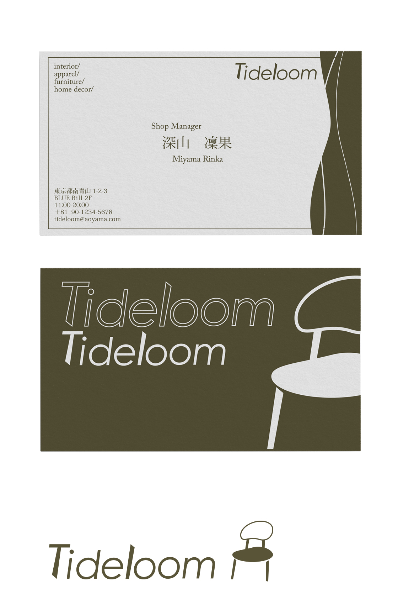

Tide Loom
Graphic Design / Branding Design / Card Design
Adobe Illustrator
南青山にある、自然素材と西海岸の空気感を取り入れたインテリアショップ「Tide Loom」のロゴとショップカードをデザイン。「海辺の暮らしを生活に織り込む」という意味を込め、海や自然を感じながらも、上品でリラックスできるショップの世界観を表現した。30〜50代のインテリアにこだわりを持つ人をターゲットに、自然や海の雰囲気を暮らしに取り入れたい人に向けたデザインを意識。落ち着いたトーンとナチュラルな素材を想起させるカラーで、個人向けだけでなくビジネスシーンでも使いやすいデザインに仕上げた。ロゴは「T」と「L」を椅子の脚に見立て、インテリアショップらしさを表現。